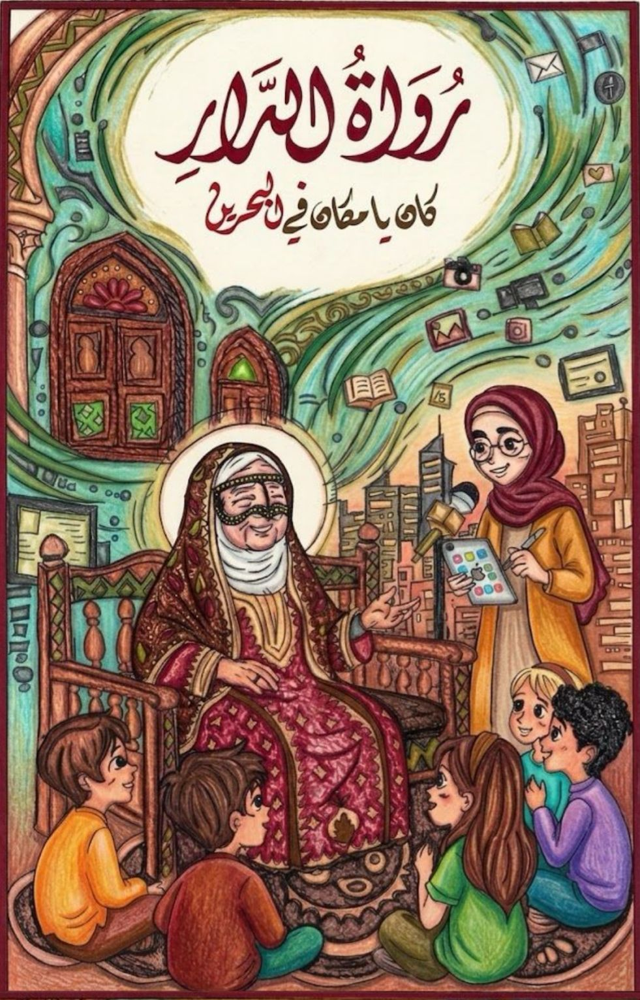
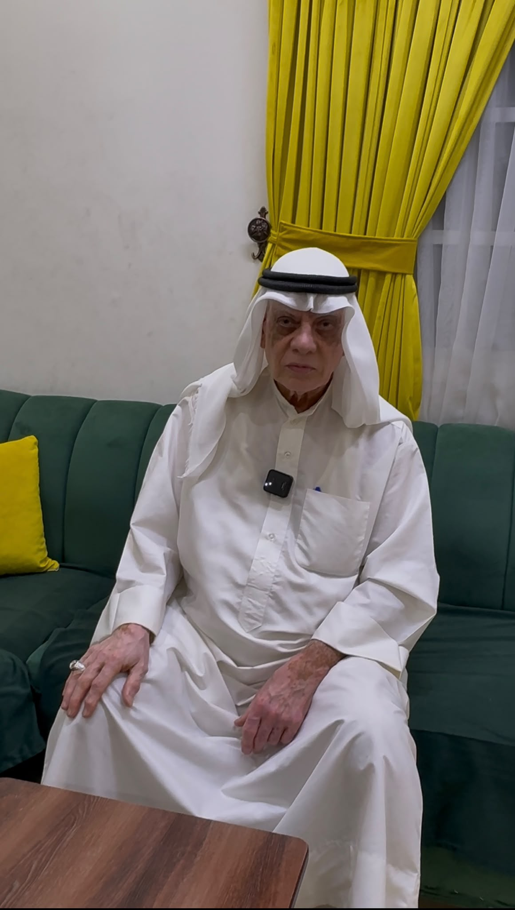

رُواةُ الدَّار
«كان يا ما كان في البحرين»
أرشيفٌ من الحكايات والذكريات البحرينية
✦ ━━━━ ✦
ابدأ الحكاية ✦


«كان يا ما كان في البحرين»
أرشيفٌ من الحكايات والذكريات البحرينية
أن لا تنطفئ الحكاياتُ برحيلِ رُواتها، بل تبقى إرثًا حيًّا يسكن القلوب، تتناقله الأجيالُ كما تتوارثُ النخيلُ ثمرَها، لتظلَّ «رُواةُ الدار» حارسةً لذاكرة الوطن، وصوتًا لماضٍ يستحق أن يُروى.
نؤمن بأن لكلِّ حكايةٍ روحًا تستحقُّ الخلود، ولكلِّ راوٍ أثرًا لا ينبغي أن يُنسى، لذا نسعى إلى جمع روايات كبار السن، وحفظها، ونقلها بأمانةٍ إلى الأجيال، لتظلَّ ذاكرة الوطن نابضةً بالحياة.
قامت مبادرة «رُواةُ الدار» على إحياء ذاكرة الوطن عبر توثيق الحكايات الشفهية لكبار السن، حيث جُمعت رواياتهم وسُجِّلت، ثم أُعيدت صياغتها بلغةٍ قريبة من جيل الشباب دون المساس بروحها الأصيلة.

مشرفة شؤون إدارية و مالية متقاعدة
📍 المحرق

راوية للتراث الشفهي
📍 قلالي

معلم لغة عربية متقاعد
📍 الدير
شاركونا انطباعكم عن «رُواةُ الدار»، ولتكن كلمتكم جزءًا من حكايتنا.

امسح الرمز عبر كاميرا هاتفك للمشاركة
إشراف وتوجيه
تم إنجاز هذا المشروع بجهد الطالبة
مدرسة الاستقلال الثانوية للبنات
بمشاركة ودعم فريق العمل